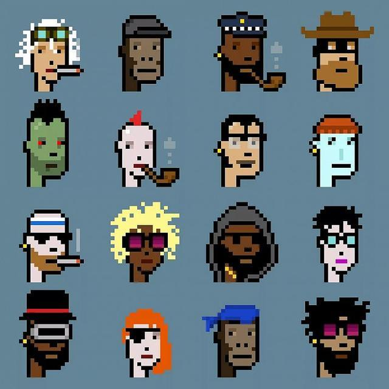
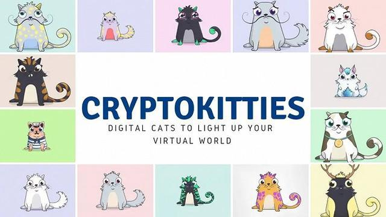
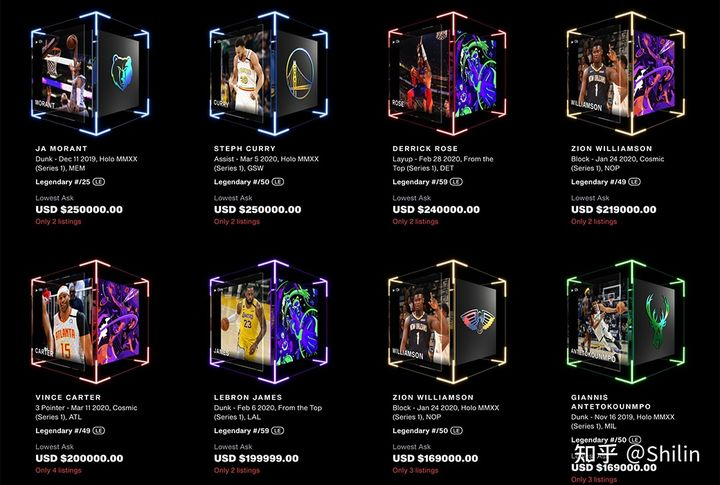
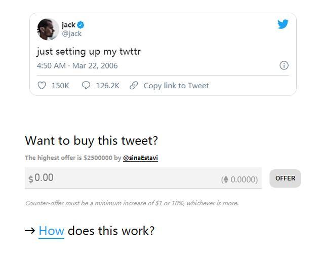
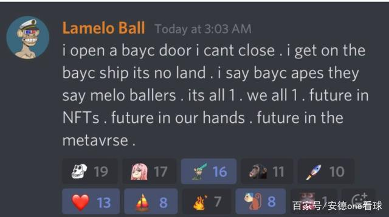
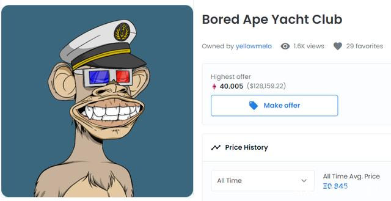
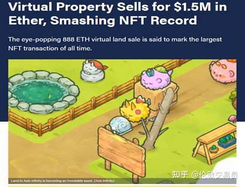
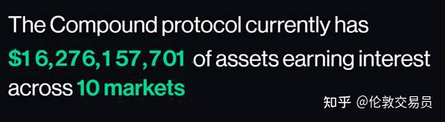
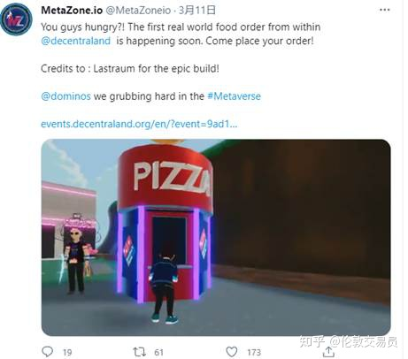
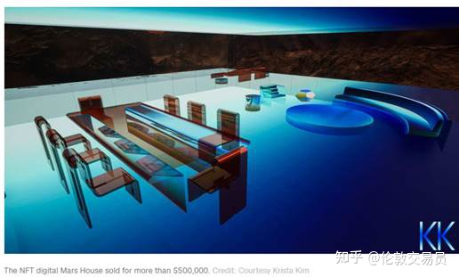

区块链“正式”出圈？突然爆火的NFT究竟是什么?
1.什么是NFT？
NFT英文全称为Non-Fungible Token，翻译成中文就是：非同质化代币，具有不可分割、不可替代、独一无二等特点。
在区块链上，数字加密货币分为原生币和代币两大类。前者如大家熟悉的比特币、以太币等，拥有自己的主链，使用链上的交易来维护账本数据；代币则是依附于现有的区块链，使用智能合约来进行账本的记录，如依附于以太坊上而发布的token。代币之中又可分为同质化和非同质化两种。
同质化代币，即FT（Fungible Token），互相可以替代、可接近无限拆分的token。例如，你手里有一个比特币与我手里的一个比特币，本质上没有任何区别，这就是同质化，就是同质化币。
而非同质化代币，即NFT，则是唯一的、不可拆分的token，如加密猫、token化的数字门票等。也就相当于带有编号的人民币，这个世界上不会有两张编号一样的人民币，也不会有两个完全一样的NFT。因此，相较于FT，NFT的关键创新之处在于提供了一种标记原生数字资产所有权（即存在于数字世界，或发源于数字世界的资产）的方法，且该所有权可以存在于中心化服务或中心化库之外。
NFT的所有权并不阻止其他人视察它或阅读它，NFT并不是捕获信息然后把它藏起来，只是捕捉信息然后发现该信息与链上所有其它信息的关系和价值。同时，NFT由于其非同质化、不可拆分的特性，使得它可以和现实世界中的一些商品绑定。换言之，其实就是发行在区块链上的数字资产，这个资产可以是游戏道具、数字艺术品、门票等，并且具有唯一性和不可复制性。由于NFT具备天然的收藏属性和便于交易，加密艺术家们可以利用NFT创造出独一无二的数字艺术品。
2.NFT是如何诞生的？
NFT的诞生基于2017年以太坊中一个叫做CryptoPunks的像素头像项目，这些像素头像总量上限为1万，任何两个人物都不能相同，拥有以太坊钱包的人都可以免费领取，领完可以放到二级市场交易。
6个月后，区块链小游戏Cryptokitties（迷恋猫）迅速流行，这是一种在以太坊撸猫的游戏。
Cryptokitty是虚拟猫，买家拥有两个及以上，就可以培育新猫，培育出稀有特征的价格会更贵。这种虚拟猫经历了几轮价格的暴涨和暴跌后，同时也让NFT被更多人认识。
Cryptokitty设计的出发点就是普及NFT的玩法，结果人们在以太坊区块链上开起了动物园，虚拟兔和虚拟狗相继火爆，再后来还有了虚拟树。挖矿、买猫、卖猫赚币买矿机，接着挖矿，或许是虚拟世界一种全新的生活方式。
不要小看了迷恋猫，市场普遍认为，迷恋猫游戏对于NFT的提出和实践是具有革命性意义的——价值不仅是可以通过加密货币承载，还可以有另一种全新、独特的承载方式。
3.NTF的价值如何？
简单来说，NFT代表了区块链上资产所有权的通证化（Tokenization）。
以购买一件原创艺术品为例，当收藏家购买一件艺术品时，他们会签署一份转让所有权的合同，然后收到一份真品证明，以证明他们拥有这件原作。NFT以类似的方式运作，在区块链中创建一个不可复制的数字令牌(因此是“非同质化”)，并将自动跟踪底层文件的整个所有权历史和销售价格。任何NFT资产的潜在买家都将确切地看到它是在什么时候创建，什么时候被购买和出售，价格多少以及由谁创建。因此，不仅产生正式所有权的整个过程是去中心化的，所有的交易历史也是透明的，这使估值过程变得更为顺畅。
当一个NFT被铸造时，该资产的所有者可以铸造该作品的多个“版本”，就像收藏卡牌一样。因此，从理论上讲，NFT的创建者可以铸造50个版本(或500个、5000个、5万个等等)的艺术品、视频等，但物以稀为贵，版本越少的NFT资产价格就越高。此外，收藏物可以从更低的“铸造号码”中获得价值，铸造号码越小价值越高。在50个版本中，号码1/50通常比10/50更有价值。
大多数NFT的版本可以被“烧毁”或以数字方式销毁。如果你拥有艺术品的多个版本，并且希望增加NFT的价值，那么销毁其中一些可能会对提价有帮助。犹如盲盒潮玩和潮鞋一样，所有营销，都有一个底层逻辑：人为制造稀缺。
4.NFT的应用
除了艺术创作，NFT还能用在哪些领域呢？
首先，可能是知识产权领域。NFT可以代表一幅画，一首歌，一项专利，一段影片，一张照片，或者其他的知识产权。在这个领域，NFT起到的是专利局的作用：帮助每一个独一无二的东西进行版权登记，帮助其识别专利。
第二，实体资产。房屋等不动产等其他的实物资产，也可以用NFT来表示进行代币化。可以用作资产的流通等金融市场。
第三，记录和身份证明。NFT独一无二，因此，也可以用来验证身份和出生证明，驾照，学历证书等方面。这些可以用数字形式进行安全保存，而防止被滥用或篡改。
第四，金融票据。各类金融票据在流通和交易过程中承载大量信息，如果与NFT结合，不仅能够确权，还便于追踪。另外，未来各类NFT资产的交易本身就可以形成一个细分的金融市场。
最后，票务。演唱会门票、电影票、话剧票等等，都可以用NFT来标记——看起来似乎长得一样的票据，实际上有不同的座位号，自然NFT也是可以在此得到应用。。所有的票都一样，但是座位号不同。
5.区块链和互联网到底是什么关系？
首先，从互联网看区块链。我们看到互联网世界其实分成上下两个部分。上面是最熟悉的互联网平台，大家每天用到的微信、滴滴、今日头条、美团等等。在互联网平台下是基础设施、基础资源、基础协议，这些用户不熟悉、也看不见。
互联网平台最有价值的两个核心能力是数字身份和网络支付。
任何一家互联网平台的护城河都是靠这两个核心能力来建立的。今天的公链就是把这两个能力提取出来，代码开源、开放，下沉到基础设施的层面。从这个角度来讲，比如用微信身份可以一键登录到无数的互联网应用。互联网的数字身份都是私有协议、都是独享能力，而现在成为开源、开放的东西。 这样，伟大的互联网公司的核心能力被暂时归零了，大家都站在一条起跑线上，一个创新和创业的蓝海开启了，这是从互联网到区块链世界的连接。
再从区块链看如何连接互联网。
公链的基础是共识，所谓共识就是自下而上而不是自上而下的。那么，人类IT文明进程中，第一个大型共识是什么？
第一个大型共识就是TCP/IP。
互联网之前的全球电信网络背后的技术协议，本质上是一个由政府主导、基于中心化组织的协议等等。 互联网的资源分配和电信网络完全不同，不是由政府和中心化组织主导； 互联网世界里的ICANN、IETF都是自下而上建立的民间非盈利组织，他们负责全球IP地址、AS号码分配，域名注册和全球根服务器运营。 TCP/IP 作为人类IT文明进程中的第一个大型共识，是点到点信息通讯的共识，我们依托这个共识、在不可信网络上建立了可信的点到点信息交换。 从这个角度看区块链到互联网的连接，本质上就是在TCP/IP共识基础上再往前迈进一步，把点到点信息交换提升到点到点的价值交换。 公链的底层协议，可以看成是TCP/IP协议的结构性拓展。
两个平行世界，一边是互联网、一边是区块链，这两个平行世界是有着相互强烈的互动，相当一段时间内都是“此长彼长、共同成长”。 区块链不是颠覆互联网，而是在全面继承互联网成果的基础上将现有全球最大互联网平台公司的核心能力提取出来，下沉到基础设施层面。
当前，全球经济正处于持续增长阶段，新一轮技术革命和产业变革持续深入，国际产业格局加速重塑，创新持续成为引领发展的第一动力。 在新一轮产业变革中，以信息技术为主导的变革对社会和经济产生了巨大的影响。 是全球研发投入最集中、创新最活跃、辐射带动作用最大的领域，是全球技术创新的竞争高地，是引领新一轮变革的主导力量。
区块链作为分布式记账、共识机制、点对点传输、加密算法、智能合约等技术的系统性集成创新。 近年来引起了全球科技、投资领域的高度重视和广泛关注，也成为国际国家组织和企业关注的热点。 目前区块链已由金融行业延伸至物联网、供应链管理、数字资产交易、智能制造等多个领域； 将成为继大数据、云计算、移动互联网、人工智能等技术的新一代信息技术，有能力引发新一轮的技术创新和产业变革。 区块链技术也将重塑整个社会的信用体系，为构建信用社会提供坚实技术基础。
上述区块链应用涵盖经济、互联网、医疗、社会等多个行业领域，能够利用技术手段重构行业生态； 建立零信任无中心的行业运行准则，从根本上消除不确定性行为，使每一笔交易、每一份数据均可查、可追溯。 未来社会一定是高度可信的社会，通过普罗大众的个人约束达到这一目的，显然不切合实际； 区块链技术从根本上解决了这一问题，即当参与者、机构或个人之间互不信任或弱信任，也能进行交易、互联和数据处理等。 可以预见，区块链这一技术特点将对未来整个社会具有颠覆性的影响； 同时也需要各个垂直行业的人才为此努力，以争取早日将区块链技术应用于各个适用领域。
